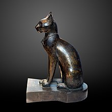
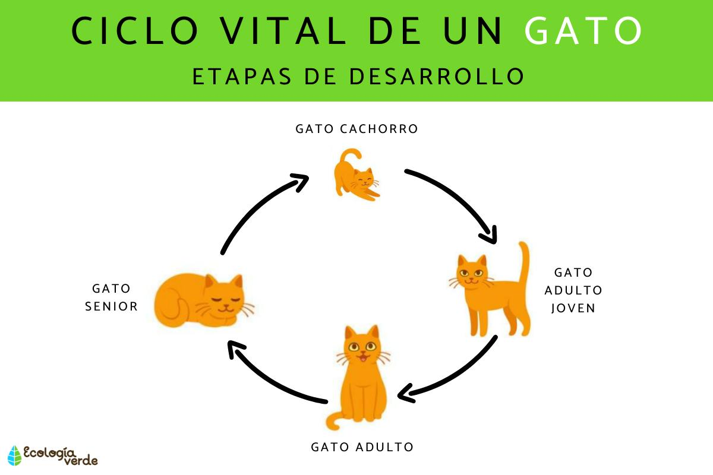

Gatos tambien conocidos por internet Michis

Gato, procedente del vocablo latino cattus, es un término que alude a un animal mamífero que forma parte del conjunto de los félidos: aquellas especies carnívoras que presentan patas posteriores con cuatro dedos y patas anteriores con cinco dedos; uñas retráctiles; hocico corto; y cabeza de forma redondeada. Los gastos además son digitígrados ya que, al caminar, solamente apoyan sus dedos.
Aunque hay gatos de diversas razas y con características muy diferentes entre ellos, estos animales suelen tener una longitud de cincuenta centímetros desde la cola hasta la cabeza. Su lengua es áspera y su pelo, suave.
El ronroneo y el maullido son dos de los mecanismos habituales que utilizan los gatos para comunicarse. Los gatos callejeros o asilvestrados suelen vivir en colonias, formando grupos, debido a que son animales sociales.
Historia

La historia del gato se basa sobre todo en la percepción que el hombre tiene del pequeño felino. Se cree que la domesticación del gato comenzó entre el 7500 a. C. y el 7000 a. C. La visión que el hombre tiene del gato ha diferido totalmente de una época a otra, desde el Antiguo Egipto cuando era venerado como un Dios, hasta la Edad Media cuando los quemaban en las hogueras, pensando que era un animal diabólico.
Vida del gato

En promedio, un gato puede vivir en torno a los 12 años, aunque es condiciones óptimas, es posible que llegue incluso a los 20 años (el gato que más ha vivido hasta ahora superó los 38 años, se llamaba Creme Puff y, por supuesto, forma parte del libro de los Guinness World Records).
Características de los gatos

Son independientes,Curiosos,Agiles, Territoriales,Afetuosos y Buen olfato